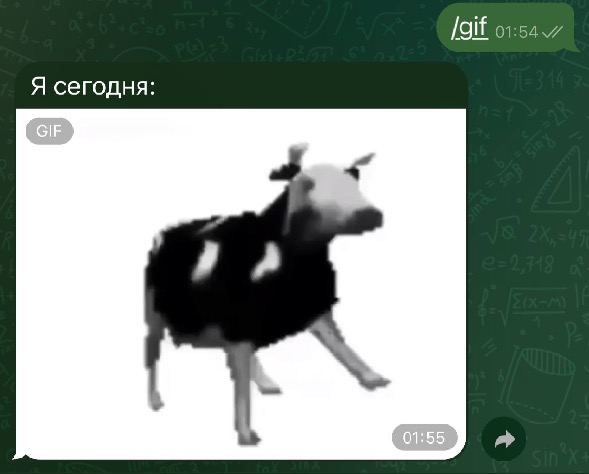
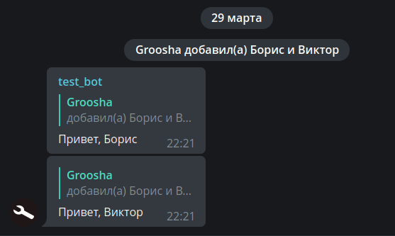

Медиафайлы¶
Используемая версия aiogram: 3.30.0
В этой главе мы разберёмся, как работать с медиафайлами: отправлять их разными способами, скачивать, собирать в альбомы, а заодно рассмотрим служебные сообщения.
Отправка файлов¶
Помимо обычных текстовых сообщений Telegram позволяет обмениваться медиафайлами различных типов: фото, видео, гифки,
геолокации, стикеры и т.д. У большинства медиафайлов есть свойства file_id и file_unique_id. Первый можно использовать
для повторной отправки одного и того же файла много раз, причём отправка будет мгновенной, т.к. сам файл уже лежит
на серверах Telegram. Это самый предпочтительный способ.
К примеру, следующий код заставит бота моментально ответить пользователю той же гифкой, что была прислана:
@dp.message(F.animation)
async def echo_gif(message: Message):
await message.reply_animation(message.animation.file_id)
Всегда используйте правильные file_id!
Бот должен использовать для отправки только те file_id, которые получил напрямую сам,
например, в личке от пользователя или «увидев» медиафайл в группе/канале. При этом,
если попытаться использовать file_id от другого бота, то это может сработать, но
через какое-то время вы получите ошибку wrong url/file_id specified. Поэтому —
только свои file_id!
В отличие от file_id, идентификатор file_unique_id нельзя использовать для повторной отправки
или скачивания медиафайла, но зато он одинаковый у всех ботов для конкретного медиа.
Нужен file_unique_id обычно тогда, когда нескольким ботам требуется знать, что их собственные file_id относятся
к одному и тому же файлу.
Если файл ещё не существует на сервере Telegram, бот может загрузить его тремя различными
способами: как файл в файловой системе, по ссылке и напрямую набор байтов.
Для ускорения отправки и в целом для более бережного отношения к серверам мессенджера,
загрузку (upload) файлов Telegram правильнее производить один раз, а в дальнейшем использовать file_id,
который будет доступен после первой загрузки медиа.
В aiogram 3.x присутствуют 3 класса для отправки файлов и медиа - FSInputFile, BufferedInputFile,
URLInputFile, с ними можно ознакомиться
в документации.
Рассмотрим простой пример отправки изображений всеми различными способами:
from aiogram.types import FSInputFile, URLInputFile, BufferedInputFile
@dp.message(Command('images'))
async def upload_photo(message: Message):
# Сюда будем помещать file_id отправленных файлов, чтобы потом ими воспользоваться
file_ids = []
# Чтобы продемонстрировать BufferedInputFile, воспользуемся "классическим"
# открытием файла через `open()`. Но, вообще говоря, этот способ
# лучше всего подходит для отправки байтов из оперативной памяти
# после проведения каких-либо манипуляций, например, редактированием через Pillow
with open("buffer_emulation.jpg", "rb") as image_from_buffer:
result = await message.answer_photo(
BufferedInputFile(
image_from_buffer.read(),
filename="image from buffer.jpg"
),
caption="Изображение из буфера"
)
file_ids.append(result.photo[-1].file_id)
# Отправка файла из файловой системы
image_from_pc = FSInputFile("image_from_pc.jpg")
result = await message.answer_photo(
image_from_pc,
caption="Изображение из файла на компьютере"
)
file_ids.append(result.photo[-1].file_id)
# Отправка файла по ссылке
image_from_url = URLInputFile("https://picsum.photos/seed/groosha/400/300")
result = await message.answer_photo(
image_from_url,
caption="Изображение по ссылке"
)
file_ids.append(result.photo[-1].file_id)
await message.answer("Отправленные файлы:\n"+"\n".join(file_ids))
Подпись у фото, видео и GIF можно перенести наверх:
@dp.message(Command("gif"))
async def send_gif(message: Message):
await message.answer_animation(
animation="<file_id гифки>",
caption="Я сегодня:",
show_caption_above_media=True
)

Скачивание файлов¶
Помимо переиспользования для отправки, бот может скачать медиа к себе на компьютер/сервер. Для этого у объекта типа Bot
есть метод download(). В примерах ниже файлы скачиваются сразу в файловую систему, но никто не мешает
вместо этого сохранить в объект BytesIO в памяти, чтобы передать в какое-то приложение дальше
(например, pillow).
@dp.message(F.photo)
async def download_photo(message: Message, bot: Bot):
await bot.download(
message.photo[-1],
destination=f"/tmp/{message.photo[-1].file_id}.jpg"
)
@dp.message(F.sticker)
async def download_sticker(message: Message, bot: Bot):
await bot.download(
message.sticker,
# для Windows пути надо подправить
destination=f"/tmp/{message.sticker.file_id}.webp"
)
В случае с изображениями мы использовали не message.photo, а message.photo[-1], почему?
Фотографии в Telegram в сообщении приходят сразу в нескольких экземплярах; это одно и то же
изображение с разным размером. Соответственно, если мы берём последний элемент (индекс -1),
то работаем с максимально доступным размером фото.
Скачивание больших файлов
Боты, использующие Telegram Bot API, могут скачивать файлы размером не более 20 мегабайт.
Если вы планируете скачивать/заливать большие файлы, лучше рассмотрите библиотеки, взаимодействующие с
Telegram Client API, а не с Telegram Bot API, например, Telethon
или Pyrogram.
Немногие знают, но Client API могут использовать не только обычные аккаунты, но ещё и
боты.
А начиная с Bot API версии 5.0, можно использовать собственный сервер Bot API для работы с большими файлами.
Альбомы¶
То, что мы называем «альбомами» (медиагруппами) в Telegram, на самом деле отдельные сообщения с медиа, у которых есть общий
media_group_id и которые визуально «склеиваются» на клиентах. Начиная с версии 3.1, в aiogram есть
«сборщик» альбомов, работу с которым мы сейчас рассмотрим.
Но прежде стоит упомянуть несколько особенностей медиагрупп:
- К ним нельзя прицепить инлайн-клавиатуру или отправить реплай-клавиатуру вместе с ними. Никак. Вообще никак.
- У каждого медиафайла в альбоме может быть своя подпись (caption). Если подпись есть только у одного медиа, то она будет выводиться как общая подпись ко всему альбому.
- Фотографии можно отправлять вперемешку с видео в одном альбоме, файлы (Document) и музыку (Audio) нельзя ни с чем смешивать, только с медиа того же типа.
- В альбоме может быть не больше 10 (десяти) медиафайлов.
Теперь посмотрим, как это сделать в aiogram:
from aiogram.filters import Command
from aiogram.types import FSInputFile, Message
from aiogram.utils.media_group import MediaGroupBuilder
@dp.message(Command("album"))
async def cmd_album(message: Message):
album_builder = MediaGroupBuilder(
caption="Общая подпись для будущего альбома"
)
album_builder.add(
type="photo",
media=FSInputFile("image_from_pc.jpg")
# caption="Подпись к конкретному медиа"
)
# Если мы сразу знаем тип, то вместо общего add
# можно сразу вызывать add_<тип>
album_builder.add_photo(
# Для ссылок или file_id достаточно сразу указать значение
media="https://picsum.photos/seed/groosha/400/300"
)
album_builder.add_photo(
media="<ваш file_id>"
)
await message.answer_media_group(
# Не забудьте вызвать build()
media=album_builder.build()
)
Результат:

А вот со скачиванием альбомов всё сильно хуже... Как уже было сказано выше, альбомы — это просто сгруппированные отдельные сообщения, а это значит, что боту они прилетают тоже в разных апдейтах. Вряд ли существует 100% надёжный способ принять весь альбом одним куском, но можно попытаться сделать это с минимальными потерями. Обычно это делается через мидлвари, мою собственную реализацию приёма медиагрупп можно найти по этой ссылке (остальной код в том репозитории лучше не смотреть, он безнадёжно устарел).
Сервисные (служебные) сообщения¶
Сообщения в Telegram делятся на текстовые, медиафайлы и служебные (они же — сервисные). Настало время поговорить о последних.

Несмотря на то, что они выглядят необычно и взаимодействие с ними ограничено, это всё ещё сообщения, у которых есть свои айдишники и даже владелец. Стоит отметить, что спектр применения сервисных сообщений с годами менялся и сейчас, скорее всего, ваш бот с ними работать не будет, либо только удалять.
Не будем сильно углубляться в детали и рассмотрим один конкретный пример: отправка приветственного сообщения вошедшему участнику. У такого служебного сообщения будет content_type равный "new_chat_members", но вообще это объект Message, у которого заполнено одноимённое поле.
@dp.message(F.new_chat_members)
async def somebody_added(message: Message):
for user in message.new_chat_members:
# проперти full_name берёт сразу имя И фамилию
# (на скриншоте выше у юзеров нет фамилии)
await message.reply(f"Привет, {user.full_name}")

Важно помнить, что message.new_chat_members является списком, потому что один пользователь может
добавить сразу нескольких участников. Также не надо путать поля message.from_user и
message.new_chat_members. Первое — это субъект, т.е. тот, кто совершил действие. Второе —
это объекты действия. Т.е. если вы видите сообщение вида «Анна добавила Бориса и Виктора», то
message.from_user — это информация об Анне, а список message.new_chat_members содержит
информацию о Борисе с Виктором.
Не стоит целиком полагаться на сервисные сообщения!
У служебных сообщений о добавлении (new_chat_members) и выходе (left_chat_member) есть
одна неприятная особенность: они ненадёжны, т.е. они могут не создаваться вообще.
К примеру, сообщение о new_chat_members перестаёт создаваться при ~10k участников в группе,
а left_chat_member уже при 50 (но при написании этой главы я столкнулся с тем, что в одной
из групп left_chat_member не появился и при 9 участниках. А через полчаса там же появился
при выходе другого человека).
С выходом Bot API 5.0 у разработчиков появился гораздо более надёжный способ видеть входы/выходы участников в группах любого размера, а также в каналах. Но об этом поговорим в другой раз.
На этом всё. До следующих глав!
Ставьте лайки, подписывайтесь, прожимайте колокольчик